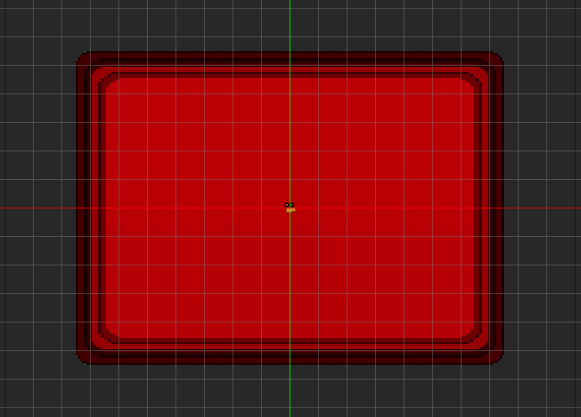
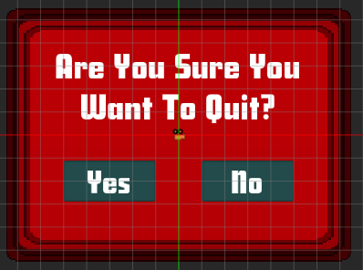
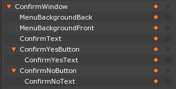

User Interface
In this lesson, we will be looking at how to create a user interface using the Reactive component. Specifically, we’ll be creating a fully functional game menu system, complete with different levels that allow the user to return to the main menu.
Learning Objectives
- Learn about when and how to use the Reactive component
- Learn to create a logical, user-friendly menu
- Understand the code being used in conjunction with the Reactive component to make the menu interactive
- Revisit the concept of Spaces briefly and implementing multiple spaces within the project
| Vocabulary | |
|---|---|
| SpriteLayer | SpriteLayerOrder |
| Reactive | |
Create a New Project
The Level(s) setup for this lesson is quite extensive, but in the end we should have a smooth, fluid menu system that can be the basis for any number of future projects. So, let’s get started!
The first thing we’ll need to do is download the “BasicUI” SpriteSource files from The Void. This set includes a number of useful UI SpriteSources, some of which we’ll be using in our project. Feel free to use as many as you’d like for your own ZeroEngine projects in the future.
Editing the Imported Sprite Sources
Before creating the sprites that will make up the menu, we need to edit some of the imported SpriteSources so they will scale correctly.
- In the Library window
- Under SpriteSource
- Select and open
Button5
- Select and open
- Under SpriteSource
- In the Sprite Source Editor
- Set SpriteFill to:
NineSlice - Set Left to:
10 - Set Right to:
10 - Set Top to:
10 - Set Bottom to:
10 - Click Save to Sprite Source and Close
- Set SpriteFill to:
{kind=link}
- In the Library window
- Under SpriteSource
- Make the same changes above that were made to
Button5to the followingSpriteSourceresources:Button4Button3Menu3
- Make the same changes above that were made to
- Under SpriteSource
{kind=link}
{kind=link}
{kind=link}
{kind=link}
Creating Levels
Creating the Game Level
We’re going to need three more Levels in addition to the one we’ve been working on: a Game level, a How to Play level, and a Credits level.
- Add a new Level resource named:
GameLevel
First, we’ll change the ClearColor to match the menu Level. Then, instead of creating all the Sprites from scratch, we’ll copy Sprites from our previously made level and paste them in the new level.
- In the Objects window
- In the Properties window
- Under ForwardRenderer
- Set ClearColor to:
[R: 0, G: 0, B: 0, A: 1.00],#000000
- Set ClearColor to:
- Under ForwardRenderer
- In the Library window
- Select and open the Level named
Level
- Select and open the Level named
- In the Objects window
- Select both the
MenuBackgroundBackandMenuBackgroundFrontobjects by first selecting one, then while holdingCtrl, select the other - With both objects selected, press
Ctrl+Cto copy them
- Select both the
- In the Library window
- Select and open the level named
GameLevel
- Select and open the level named
- In the Level window
- Press
Ctrl+Vto paste the objects from the menu level
- Press
As we don’t need anything as big as the menu backgrounds on these pages, we can just make some quick changes to the Area components of these two objects to resize them.
- In the Objects window
- In the Properties window
- Set Name to:
BackgroundBack - Under Area
- Set Size to:
[16, 4.75]
- Set Size to:
- Set Name to:
- In the Objects window
- In the Properties window
- Set Name to:
BackgroundFront - Under Area
- Set Size to:
[15, 4]
- Set Size to:
- Set Name to:
We can do the same trick with a SpriteText object from the menu Level.
- In the Library window
- Select and open the Level named
Level
- Select and open the Level named
- In the Objects window
- Select the GameTitleText object
- Make a copy of it by pressing
Ctrl+C
- In the Library window
- Select and open the level named
GameLevel
- Select and open the level named
- In the Level window
- Press
Ctrl+Vto paste the objects from the menu level
- Press
- In the Objects window
- In the Properties window
- Set Name to:
WinText - Under SpriteText
- Set FontSize to: 95
- Set Text to: Congratulations! You’ve Won!
- Set Color to:
[R: 28, G: 60, B: 60, A: 1.00],#1C3C3C
- Under Area
- Set Size to:
[12, 3.5]
- Set Size to:
- Set Name to:
The backgrounds and text for the GameLevel should now appear like so:
{kind=link}
The last thing we’ll do for the GameLevel is to steal a button from the menu Level and use it as a “Return to Main Menu” button
- In the Library window
- Select and open the Level named
Level
- Select and open the Level named
- In the Objects window
- Select the StartGameButton object
- Make a copy of it by pressing
Ctrl+C
- In the Library window
- Select and open the level named
GameLevel
- Select and open the level named
- In the Level window
- Press
Ctrl+Vto paste the objects from the menu level
- Press
- In the Objects window
- In the Properties window
- Set Name to:
ReturnButton - Under Transform
- Set Translation to:
[0, -4, 0]
- Set Translation to:
- Under Sprite
- Set Color to:
[R: 43, G: 72, B: 76, A: 1.00],#2B484C
- Set Color to:
- Set Name to:
- In the Objects window
- In the Properties window
- Set Name to:
ReturnText - Under SpriteText
- Set FontSize to:
55 - Set Text to:
Return to Main Menu - Set Color to:
[R: 187, G: 0, B: 5, A: 1.00],#BB0005
- Set FontSize to:
- Under Area
- Set Size to:
[9, 1]
- Set Size to:
- Set Name to:
- Save your project and run the game
{kind=link}
Creating the How To Play and Quit Levels
To save even more time, to create the other two levels we can merely duplicate the GameLevel and make a few changes.
- In the Library window
- Under Level
- Duplicate the GameLevel level twice
- Select the
GameLevelCopy1level - Right-click and select Rename
- Set new name to HowToPlayLevel
- Select the
GameLevelCopy2level - Right-click and select Rename
- Set new name to CreditsLevel
- Select and open
HowToPlayLevel
- Under Level
- In the Objects window
- In the Properties window
- Set Name to:
HowToPlayText- Under SpriteText
- Set Font to:
90 - Set Text to:
Press Start Game in the Main Menu!
- Set Font to:
- Under SpriteText
- Set Name to:
- Save your project and run the game
{kind=link}
And finally, the Credits level
- In the Library window
- Under Level
- Select and open
CreditsLevel
- Select and open
- Under Level
- In the Objects window
- In the Properties window
- Set Name to:
CreditsText - Under SpriteText
- Set Text to: Your own name or whatever you would like to place here. The sample project will use
Made by: YOU
- Set Text to: Your own name or whatever you would like to place here. The sample project will use
- Under Area
- Set Size to:
[12, 2]
- Set Size to:
- Set Name to:
{kind=link}
Okay, so we’ve now got our Main Menu and all the levels to which the menu can take us. After all that setup and object creation, it’s time to put the “react” in Reactive.
Adding the Components
For this project, you will need to download three components found in an asset on The Void named “ProjectFun UIComponents”. The three component scripts and their functions are:
UIButton- This component should be placed on every button in the project. It keeps track of the current state of the button (i.e., whether the mouse is currently hovering over it or if it has been clicked) as well as dispatches a custom event with the information needed for the UIMenuManager component to perform its logic.
UIMenuManager- This component will usually be placed on the parent object of all the menu buttons on a given level. By listening for the UIButton custom event, it receives the information regarding which button was pushed and then acts on that information, calling the appropriate response functions. These responses include loading a new level, triggering a custom event to create a confirmation window (through the
ConfirmationPopUpcomponent) , and either accepting or denying that confirmation request.
- This component will usually be placed on the parent object of all the menu buttons on a given level. By listening for the UIButton custom event, it receives the information regarding which button was pushed and then acts on that information, calling the appropriate response functions. These responses include loading a new level, triggering a custom event to create a confirmation window (through the
ConfirmationPopUp- This component should be placed on the
LevelSettingsobject of the level where the Confirmation Window is located. By listening and responding to the ConfirmationPopUpRequest custom event (dispatched fromUIMenuManager), the component does four things:- Creates a new space for the Confirmation Window
- Loads the Confirmation Window level
- Turns off the Reactive functionality of the main menu
- By listening for the ConfirmationPopUpResponse custom event (also dispatched from
UIMenuManager), it either causes the game either to quit out or, if the confirmation to quit is denied, to destroy the confirmation space and restart the main menu.
- This component should be placed on the
Let’s start out by taking a more in-depth look at the UIButton component and applying it to all the buttons in our project.
The UIButton Component
The primary purpose of this component is to set the values for the buttons’ properties and what level to load when it is clicked (only for those buttons that indicate changing levels).
Note
The following section (and the sections covering the other two components) give a detailed overview of what is happening in each component. Before discussing each section of a certain component, the code for that section as well as comments explaining what each line does is displayed. You DO NOT need to write this code anywhere. It’s there for your reference.
The best way to use these in-depth sections is, after looking at the code and reading the discussion about a particular section, look at the section of the script inside the project itself to see how it fits in as part of a bigger whole. Doing this will provide the greatest potential to not only understand what is happening, but also to become comfortable enough to start creating your own interacting components.
The UIButton Class
// Custom event that notifies the UIMenuManager of state changes on its buttons
class UIButtonEvent : ZilchEvent
{
// Registers UIButtonEvent as the custom event's string type identifier
sends UIButtonEvent : UIButtonEvent;
// Button that underwent a state change
var Button : Cog = null;
// The current state of the button
var State : ButtonState = ButtonState.Default;
// The level to load when the button is clicked
var LevelToLoad : Level = null;
}
This block of code, which defines the custom event we’ll be using to send the information of whatever button has been clicked, is completely separate from the rest of the code. Custom events that send information like this one require their own class where variables are defined that will hold the information.
You could put this block of code in any new ZilchScript that you write and it would still be accessible from every other ZilchScript. It is placed in this component because this is where we dispatch instances of this event. All of the variables listed in this class will be assigned values either from properties of the button object itself or variables inside the UIButton class (which are in our next code-block).
Variables
// This component requires a reactive component
[Dependency]
var Reactive : Reactive = null;
// Should this component be active?
[Property]
var Active : Boolean = true;
// Sprite Sources for Default, Hovered, and Clicked States
[Property]
var DefaultSprite : SpriteSource = null;
[Property]
var HoveredSprite : SpriteSource = null;
[Property]
var ClickedSprite : SpriteSource = null;
// Property to select which level this button should load when clicked
[Property]
var LevelToLoad : Level = null;
// Current State of the button
var CurState : ButtonState = ButtonState.Default;
Reactive- A variable for the Reactive component that is given the Dependency attribute (to make sure the Reactive Component is attached to the object)Active- A Boolean with the Property attribute to set whether the Component should be active or notDefaultSprite- A SpriteSource with the Property attribute to be used when the button is in its DefaultState (i.e., when the mouse is neither hovering over it nor clicking it)HoveredSprite- A SpriteSource with the Property attribute to be used when the button is in its HoveredState (i.e, when the mouse hovers over the button)ClickedSprite- A SpriteSource with the Property attribute to be used when the button is in its ClickedState (i.e., when the mouse is clicked)LevelToLoad- A Level reference to the particular level to load based on which button has been clickedCurrentState- A variable that keeps track of the current button state. All of the possible button states have been defined in anenumat the very top of the script.
Mouse Events
function Initialize(init : CogInitializer)
{
// Connections to the needed Mouse events (Enter, Exit, Up, Down)
Zero.Connect(this.Owner, Events.MouseEnter, this.OnMouseEnter);
Zero.Connect(this.Owner, Events.MouseExit, this.OnMouseExit);
Zero.Connect(this.Owner, Events.MouseUp, this.OnMouseUp);
Zero.Connect(this.Owner, Events.MouseDown, this.OnMouseDown);
}
// Responds to the mouse entering the boundaries of the button
function OnMouseEnter(event : ViewportMouseEvent)
{
// Calls the function for the Hovered state
this.HoveredState();
}
// Responds to the mouse exiting the boundaries of the button
function OnMouseExit(event : ViewportMouseEvent)
{
// Calls the function for the Default state
this.DefaultState();
}
// Responds to the mouse releasing a button
function OnMouseUp(event : ViewportMouseEvent)
{
// Goes back to the hovered space, as mouse would most likely still
// be hovering over the button just clicked
this.HoveredState();
}
// Responds to the mouse clicking a button
function OnMouseDown(event : ViewportMouseEvent)
{
// Calls the function for the clicked state
this.ClickedState();
}
Above we see the Initialize() function as well as the response functions called when a mouse event is heard. As our menu is navigated by the mouse, we need to connect to the mouse events that correspond to how the player will interact with it. Inside each mouse event response function, another function is called (either DefaultState(), HoveredState(), or ClickedState()). These three functions set the properties of the button depending on the state the button is currently in. The last line of each of these functions is the call to the DispatchState() function, which will be discussed in further detail below.
Button States and Response Functions
// Sets the button to the default state
function DefaultState()
{
// Changes this object's SpriteSource to the one selected in the
// DefaultSprite variable property
this.Owner.Sprite.SpriteSource = this.DefaultSprite;
// Changes CurState to Default (to be sent as info with event dispatch)
this.CurState = ButtonState.Default;
// Calls the function that dispatches the event with state info
this.DispatchState();
}
// Sets the button the the hovered (or focused) state
function HoveredState()
{
// Changes this object's SpriteSource to the one selected in the
// HoveredSprite variable property
this.Owner.Sprite.SpriteSource = this.HoveredSprite;
// Changes CurState to Hovered (to be sent as info with event dispatch)
this.CurState = ButtonState.Hovered;
// Calls the function that dispatches the event with state info
this.DispatchState();
}
// If valid, Sets the button to the clicked state
function ClickedState()
{
//Check to make sure the ButtonState isn't already Hovered
if(this.CurState != ButtonState.Hovered)
{
return;
}
// Changes this object's SpriteSource to the one selected in the
// ClickedSprite variable property
this.Owner.Sprite.SpriteSource = this.ClickedSprite;
// Changes CurState to Clicked (to be sent as info with event dispatch)
this.CurState = ButtonState.Clicked;
// Calls the function that dispatches the event with state info
this.DispatchState();
}
The possible states a button can be in are defined in the ButtonState enum as Default, Hovered, and Clicked at the very top of the script, above the UIButtonEvent class. So, it makes sense to name these functions according to those states.
Each function in the code-block above does two things that rely on the button state:
- The button’s
SpriteSourceis changed to what is selected for theDefaultSprite,HoveredSprite, andClickedSpriteproperties - The
CurrentStatevariable is set toButtonStatethat corresponds to the response function (for example,this.CurrentStateis set toButtonState.Hoveredin theHoveredState()function).
The final line in each function is the call to the DispatchState() function, which dispatches the UIButtonEvent custom event.
Dispatching the Event
// Dispatches the current state of the button
function DispatchState()
{
// Creates a new instance of the UIButtonEvent custom event
var buttonEvent : UIButtonEvent = new UIButtonEvent();
// Sets the information to be sent with the event
buttonEvent.Button = this.Owner;
buttonEvent.State = this.CurState;
buttonEvent.LevelToLoad = this.LevelToLoad;
//Dispatches the event onto the space
this.Space.DispatchEvent(Events.UIButtonEvent, buttonEvent);
}
In the DispatchState() function, a new instance of the UIButtonEvent custom event called buttonEvent is created. Then, the variables defined in the custom event–that is, the information we wish to send with the event–are set to the appropriate values:
buttonEvent.Buttonis a reference to the button itself, so its value is set tothis.Owner(that is, the button this component is on)buttonEvent.Stateis set to the current value ofthis.CurrentStatebuttonEvent.LevelToLoadis set to the value of the variableLevelToLoad. Remember that theLevelToLoadhas the Property attribute, which means we’ll be setting its value in the Property window whenever we attach this component to an object.
Finally, the new instance of UIButtonEvent is dispatched onto the Space so that any object within the Space that is listening for it can hear it and receive all of the information sent with it.
Attaching the UIButton Component
Adding Confirmation of Destructive Action
Right now, when we hit the Quit button in the Main Menu, it does nothing (as we haven’t added the UIButton component to it). We could easily add a case into our UIMenuManager component that just quits out of the game when we hit quit, but as both game developers and players have come to realize, this is a very bad idea.
When things like level progress, item accumulation, and especially save states are at risk, you will always want to provide a confirmation interface making sure that the player wishes to quit. It is fairly common to accidentally hit a quit button without meaning to. If there is no confirmation interface that prompts the user to make sure they really do intend to quit, there will inevitably be a large number of frustrated, angry players.
As the last part of this User Interface project, we will make a “confirmation to quit” window that will pop up when the player chooses the “Quit” option from the main menu. It will ask whether the player really does intend to quit and provides two buttons–”Yes” or “No”–for the player to provide their answer. As such a window could reasonably appear at any point in a game (e.g., at a main menu, at a pause menu, at a level restart prompt, etc...), we will want to put it in its own Space, therefore making it accessible no matter what level the player is in.
Creating the Confirmation Window Level
The first thing we need to do is to add a level for the confirmation window. To display any object in a space, it must be placed in its own level.
- Add a new Level resource named:
ConfirmLevel - Select the LevelSettings object
- Under ForwardRenderer
- Set ClearColor to:
[R: 0, G: 0, B, 0, A: 1.00],#000000
- Set ClearColor to:
- Under CameraViewport
- Set Layer to:
1 - Set Background to:
false
- Set Layer to:
- Under ForwardRenderer
With these preliminary steps done, let’s make the confirmation window itself.
Creating the Confirmation Window
The Parent Object
To keep everything tidy and in one place, let’s make a parent object, similar to the one we made for the main menu buttons, that will act as the parent object for all of our confirmation window objects.
- In the ConfirmLevel window
- Command :
CreateTransformor
- Command :
- In the Objects window
- In the Properties window
- Set Name to: ConfirmWindow
Background Sprites and SpriteText
As before, we can speed this process up by reusing assets we’ve already placed in other levels. For the confirmation window, let’s use the menu background sprites again.
- In the Library window
- Under the Level tag
- Open the level named:
Level
- Open the level named:
- Under the Level tag
- In the Objects window
- Select the
MenuBackgroundBackobject - Make a copy of the object by pressing
Ctrl+C
- Select the
- In the Library window
- Under the Level tag
- Open the level named:
ConfirmLevel
- Open the level named:
- Under the Level tag
- In the Level window
- Paste the object by pressing
Ctrl+V
- Paste the object by pressing
- In the Properties window
- Set Name to:
ConfirmWindowBack - Under Sprite
- Set Color to:
[R: 82, G: 0, B: 3, A: 1.00],#520003
- Set Color to:
- Under Area
- Set Size to:
[15, 11]
- Set Size to:
- Set Name to:
- In the Objects window
- Select and copy the
ConfirmWindowBackobject - Select the newly created object
- Select and copy the
- In the Properties window
- Set Name to:
ConfirmWindowFront - Under Sprite
- Set SpriteLayer to:
MenuBackgroundFront - Set Color to:
[R: 187, G: 0, B: 5, A: 1.00],#BB0005
- Set SpriteLayer to:
- Under Area
- Set Size to:
[14, 10]
- Set Size to:
- Set Name to:
- In the Objects window
The Level window should now look like this:

Now let’s add the SpriteText that asks the user if they really do want to quit.
- Command :
CreateSpriteTextor - In the Objects Window
- Select the SpriteText you created
- Parent the SpriteText to the
ConfirmWindowobject
- In the Properties window
- Set Name to:
ConfirmText - Under Transform
- Set Translation to:
[0, 2, 0]
- Set Translation to:
- Under SpriteText
- Set SpriteLayer to:
MenuButtonText - Set Font to:
SAVINGSB_ - Set FontSize to: 100
- Set Text to:
Are You Sure You Want To Quit? - Set Align to:
Center - Set Color to:
[R: 255, G: 255, B: 255, A: 1.00],#FFFFFF
- Set SpriteLayer to:
- Add the Area component
- Under Area
- Set Size to:
[12, 4]
- Set Size to:
- Under Area
- Set Name to:
Button Sprites
Let’s copy over the buttons from the main menu since they’re already setup as we need them to be.
- In the Library window
- Under the Level tag
- Open the level named:
Level
- Open the level named:
- Under the Level tag
- In the Objects window
- Select the
StartGameButtonobject - Make a copy of the object by pressing
Ctrl+C
- Select the
- In the Library window
- Under the Level tag
- Open the level named:
ConfirmLevel
- Open the level named:
- Under the Level tag
- In the Level window
- Paste the object by pressing
Ctrl+V - Parent the newly created object to the
ConfirmWindowobject
- Paste the object by pressing
- In the Properties window
- Set Name to:
ConfirmYesButton - Under Transform
- Set Translation to:
[-3, -2, 0]
- Set Translation to:
- Under Sprite
- Set Color to:
[R: 35, G: 75, B: 75, A: 1.00],#234B4B
- Set Color to:
- Under Area
- Set Size to:
[4, 1.75]
- Set Size to:
- Set Name to:
- In the Objects window
- Select the
StartGameTextobject parented to theConfirmYesButtonobject
- Select the
- In the Properties window
- Set Name to:
ConfirmYesText - Under SpriteText
- Set Text to:
Yes - Set Color to:
[R: 255, G: 255, B: 255, A: 1.00],#FFFFFF
- Set Text to:
- Under Area
- Set Size to:
[4, 1.75]
- Set Size to:
- Set Name to:
The No button is just a matter of copying the object we just made and changing a couple of properties.
- In the Objects window
- Select and copy the
ConfirmYesButtonobject - Select the newly created object
- Select and copy the
- In the Properties window
- Set Name to:
ConfirmNoButton - Under Transform
- Set Translation to:
[3, -2, 0]
- Set Translation to:
- Set Name to:
- In the Objects window
- Select the
ConfirmYesTextobject parented to theConfirmNoButtonobject
- Select the
- In the Properties window
- Set Name to:
ConfirmNoText - Under SpriteText
- Set Text to:
No
- Set Text to:
- Set Name to:
We should now have our finished Confirmation of Quitting window:

And the hierarchy in the Objects window for the entire Confirmation of Quitting window:

Now that we have our level ready to go, it’s time to take a look at our final component, ConfirmationPopUp.
The ConfirmationPopUp Component
This component aims to accomplish the following objectives:
- Create the new
Spacefor the ConfirmationLevel - Load the Confirmation Level once the Space has been created
- Turn off all the Main Menu buttons while the Confirmation Window exists (so the user doesn’t accidentally interact with the Main Menu)
- Receive the response from the player deciding whether they should quit or not
- If they do wish to quit, quit out of the game
- If they do not wish to quit, turn back on all the Main Menu buttons and destroy the Space where the Confirmation Level exists
Two New Custom Events
// Class for a custom event that requests a confirmation window to appear
class ConfirmationPopUpRequest : ZilchEvent
{
// Registers ConfirmationPopUpRequest as the custom event's string type identifier
sends ConfirmationPopUpRequest : ConfirmationPopUpRequest;
// Variable that sends a reference to the object that made the request
var Source : Cog = null;
}
// Class for a custom event that responds to a confirmation request either affirmatively (true)
// or negatively (false). Used here for buttons confirmation to quit buttons
class ConfirmationPopUpResponse : ZilchEvent
{
// Registers ConfirmationPopUpResponse as the custom event's string type identifier
sends ConfirmationPopUpResponse : ConfirmationPopUpResponse;
// Variable that sends the true/false (yes/no) response to quit confirmation
var Response : Boolean = false;
}
ConfirmationPopUpRequest is the custom event dispatched when there is a need for a confirmation pop up window. In our case, it’s a confirmation to quit. It uses the sends keyword to register the event’s string type identifier and has one variable that provides the Source cog (or “game object”) that has sent the request.
ConfirmationPopUpResponse is the custom event dispatched when the player has responded to the confirmation to quit window, either with a yes or no. Again, the sends keyword registers the event’s string type identifier. The one variable in this event–Response–is a Boolean that lets us know if the user answered “yes” or “no”. Its value will be true if the answer if “yes” or false if the answer is no.
Variables
// The level with the confirmation window in it to be loaded in the new space
[Property]
var ConfirmationLevel : Level = null;
// Variable to reference the new space where the confirmation window will exist
var ConSpace : Space = null;
// Space archetype used to create the new space for the level containing the
// confirmation window
[Property]
var ConSpaceArchetype : Archetype = null;
// The parent object for the buttons in a level
[Property]
var SourceMenu : CogPath;
ConfirmationLevel- A Level variable with the Property attribute where we set the level that holds the confirmation window in itConSpace- A Space variable so we can reference the newly created Space where the Confirmation level will be loadedConSpaceArchetype- An Archetype variable with the Property attribute where we set the Space archetype used to generate the new SpaceSourceMenu- A CogPath variable with the Property attribute where we set the parent object for the main menu buttons
Connecting to the ConfirmationPopUpRequest Event
function Initialize(init : CogInitializer)
{
// Connects to the ConfirmationPopUpRequest custom event
Zero.Connect(this.Space, Events.ConfirmationPopUpRequest, this.OnConfirmationPopUpRequest);
}
// Response function called when ConfirmationPopUpRequest event is heard
function OnConfirmationPopUpRequest(event : ConfirmationPopUpRequest)
{
// Creates and gets a reference to a new space made the confirmation window level
this.ConSpace = this.GameSession.CreateNamedSpace("ConSpace", this.ConSpaceArchetype);
// Loads the level that contains the confirmation window
this.ConSpace.LoadLevel(this.ConfirmationLevel);
// Calls the SetChildrenReactive function in the UIMenuManager component, passing in
// false to deactivate the reactive components on the menu buttons
this.SourceMenu.Cog.UIMenuManager.SetChildrenReactive(false);
// Gets a reference to the SelectionArrow and checks to see if it exists in the level
var selectionArrow = this.SourceMenu.Cog.UIMenuManager.SelectionArrow.Cog;
if(selectionArrow != null)
{
// If it does exist, make the SelectionArrow invisible
selectionArrow.Sprite.Visible = false;
}
// Connects to the ConfirmationPopUpResponse custom event
Zero.Connect(this.Space, Events.ConfirmationPopUpResponse, this.OnConfirmationPopUpResponse);
}
In the Initialize() function, you’ll see that we’re connecting to (or listening for) an instance of the ConfirmationPopUpRequest event that has been dispatched onto the Space. At this point we need to look back at our UIMenuManager script where we last left off, inside the OnButtonClicked() function:
// If the button is meant to quit the game...
else if(button.Name == "QuitButton")
{
Console.WriteLine("ConReq");
//Create a new instance of the event that requests the confirmation window
var conReq = ConfirmationPopUpRequest();
// Set event's Source variable to this object
conReq.Source = this.Owner;
// Dispatch the event onto the space
this.Space.DispatchEvent(Events.ConfirmationPopUpRequest, conReq);
// Connect to the UIButtonEvent custom event dispatched from the space where
// the confirmation window exists.
Zero.Connect(this.LevelSettings.ConfirmationPopUp.ConSpace,
Events.UIButtonEvent,
this.OnUIButtonEvent);
}
As you can see, if the button’s name is “QuitButton”, the first thing we do is create a new instance of the ConfirmationPopUpRequest event. Then, we set the source of the request to this.Owner and dispatch the event onto the Space. The last thing to do is to connect to the UIButtonEvent that will be dispatched from our Confirmation Space.
What this means is that once we create the new Space and load the Confirmation level, we will need to listen to the button events dispatched onto that new Space. These button events can be sent out by the “yes” and “no” buttons, as they also have the UIButton component attached to them. Since those buttons exist in a different Space from one in which the ConfirmationPopUp component exists, we need to listen for the events the button dispatch in the Space where it does exist. We access that Space in UIMenuManager using our variable from the ConfirmationPopUp component: this.LevelSettings.ConfirmationPopUp.ConSpace .
With that section covered, let’s go back to our ConfirmationPopUp script.
Responding to the ConfirmationPopUpRequest Event
// Response function called when ConfirmationPopUpRequest event is heard
function OnConfirmationPopUpRequest(event : ConfirmationPopUpRequest)
{
// Creates and gets a reference to a new space made the confirmation window level
this.ConSpace = this.GameSession.CreateNamedSpace("ConSpace", this.ConSpaceArchetype);
// Loads the level that contains the confirmation window
this.ConSpace.LoadLevel(this.ConfirmationLevel);
// Calls the SetChildrenReactive function in the UIMenuManager component, passing in
// false to deactivate the reactive components on the menu buttons
this.SourceMenu.Cog.UIMenuManager.SetChildrenReactive(false);
// Gets a reference to the SelectionArrow and checks to see if it exists in the level
var selectionArrow = this.SourceMenu.Cog.UIMenuManager.SelectionArrow.Cog;
if(selectionArrow != null)
{
// If it does exist, make the SelectionArrow invisible
selectionArrow.Sprite.Visible = false;
}
// Connects to the ConfirmationPopUpResponse custom event
Zero.Connect(this.Space, Events.ConfirmationPopUpResponse, this.OnConfirmationPopUpResponse);
}
This function accomplishes the first three objectives from our list above:
- First, we create the new
Spacethat the Confirmation level will exist in. - Second, we load the Confirmation level as specified by
ConfirmationLevelvariable. - Third, we turn off all the main menu buttons by setting the
Activeproperty on theirReactivecomponents to false. This is done by accessing theSetChildrenReactive()function in ourUIMenuManagercomponent and passing in the valuefalse.
The last line of this function should look familiar. As in the OnButtonClicked() function in our UIMenuManager script, we are again connecting to an event outside of the Initialize() function. In this case, we are connecting to the second custom event defined in the ConfirmationPopUp script: ConfirmationPopUpResponse.
The ConfirmationPopUpResponse Event
Once more, let’s look back at our UIMenuManager script where we left off last time, where we check to see if the name of the button is “ConfirmYesButton”:
// If the button confirms that the player wishes to quit...
else if(button.Name == "ConfirmYesButton")
{
Console.WriteLine("ConYes");
// Create a new instance of the event that requests the confirmation window
var conEvent = ConfirmationPopUpResponse();
// Sets the event's Response variable (true means to confirm quit)
conEvent.Response = true;
// Dispatch the event onto the space
this.Space.DispatchEvent(Events.ConfirmationPopUpResponse, conEvent);
}
// If the button denies that the player wishes to exit...
else if(button.Name == "ConfirmNoButton")
{
Console.WriteLine("ConNo");
// Create a new instance of the event that requests the confirmation window
var conEvent = ConfirmationPopUpResponse();
// Sets the event's Response variable (false means to deny quit)
conEvent.Response = false;
// Dispatch the event onto the space
this.Space.DispatchEvent(Events.ConfirmationPopUpResponse, conEvent);
}
If the button is named ConfirmYesButton (the “Yes” button on our Confirmation window) we create a new instance of the ConfirmationPopUpResponse event (named conEvent). As we do want to quit in this case, we set the event variable conEvent.Response to true and dispatch the instance of the event onto the Space.
Next, we have our last check for the name of the button. If the button is named “ConfirmNoButton” (the “No” button on our Confirmation window) then again we create a new instance of the ConfirmationPopResponse event. This time, however, we set conEvent.Response to false as the player has decided not to quit. Finally, we once again dispatch our instance of the event onto the Space.
As we saw above in the OnConfirmationPopUpRequest() function, the script is now listening for a dispatch of the ConfirmationPopUpResponse event. So, how does it respond when it hears a dispatch? This forms the last part of our discussion of the components for our project.
Responding to the ConfirmationPopUpResponse Event
// Response function called when ConfirmationPopUpResponse event is heard
function OnConfirmationPopUpResponse(event : ConfirmationPopUpResponse)
{
// If the the response sent with the event is true...
if(event.Response)
{
//Quit out of the game
this.GameSession.Quit();
}
// If it's false, call the SetChildrenReactive function in the UIMenuManager component,
// passing in "true" to activate the reactive components on the menu buttons
this.SourceMenu.Cog.UIMenuManager.SetChildrenReactive(true);
// Disconnects from the ConfirmationPopUpResponse custom event
Zero.Disconnect(this.Space, Events.ConfirmationPopUpResponse, this.Owner);
//Destroys the space created for the confirmation window level
this.ConSpace.Destroy();
}
The first thing that we do is to check the event variable (event.Response) that tells us whether the response was “yes” or “no” (true or false)). If event.Response is true, then we call the function that will cause the game to quit. If event.Response is false, however, we have a few different things to do.
First, we need to turn the buttons of our main menu back on. We do this in the same way we turned them off, by calling on the SetChildrenReactive() function. This time, however, we pass in the value true. This sets all the Active properties on the Reactive components attached to our main menu buttons to true, allowing those buttons to once again react to mouse events. Second, we disconnect from the ConfirmationPopUpResponse event as we no longer need to listen for any dispatches of that event. Finally, we destroy the Space in which the Confirmation level exists, clearing it from the screen and showing us only the main menu again.
Now that we’ve gone through everything, let’s finish this project up by attaching our final components.
Attaching the Final Components
The QuitButton Object
Let’s start with our main menu level and attach the UIButton component to the QuitButton object
- In the Objects window
- Select the
QuitButtonobject
- Select the
- In the Properties window
- Add the UIButton component
- Under UIButton
- Set DefaultSprite to:
Button5 - Set HoveredSprite to:
Button4 - Set ClickedSprite to:
Button3
- Set DefaultSprite to:
The LevelSettings Object
- In the Objects window
- Select the
LevelSettingsobject
- Select the
- In the Properties window
- Add the ConfirmationPopUp component
- Under ConfirmationPopUp
- Set Confirmation Level to:
ConfirmLevel - Set ConSpaceArchetype to:
Space - Set SourceMenu by: choosing the MenuButtons object or typing
:/MenuButtonsinto the text field
- Set Confirmation Level to:
- Save your project and run the game
You should now have a fully-functioning menu system, complete with a confirmation of quitting window that allows the player to choose yes or no!
On Your Own
- Add the option to quit the game from every level accessible from the menu (i.e., Game, How To Play, Credits). Make sure the Confirmation window is brought up.
- Tips: Make a new button expressly for this purpose. What might you name it so that it would work seamlessly with the rest of the code? Each level already has ``UIButton`` and ``UIMenuManager``. Will those components stay in the same place? Do you need to make any more objects? Do you need to include ``ConfirmationPopUp`` anywhere?